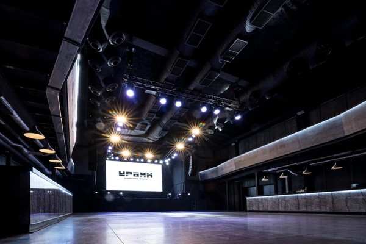
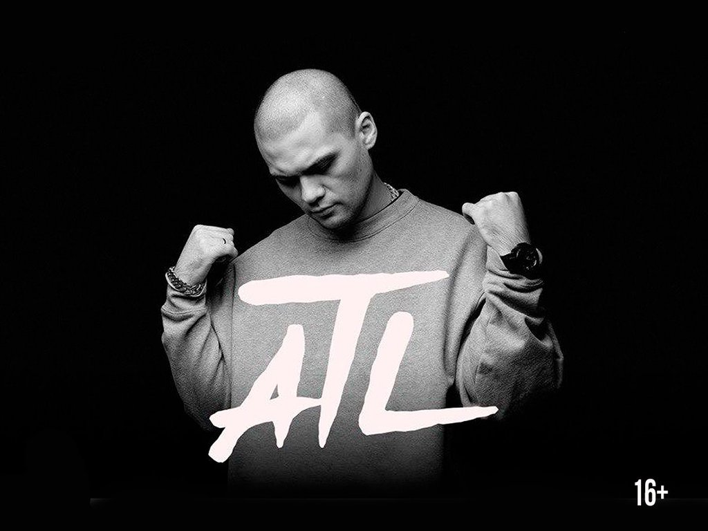

Главная
На этом сайте вы сможете посмотреть информацию о концертных клубах Москвы, исполнителях и купить билет на желаемый концерт.
Концертные залы
VK Stadium
VK Stadium — это одна из самых больших площадок Москвы, способная комфортно разместить до 7 000 гостей, где каждый зритель будет иметь прямой обзор сцены.

Урбан
«Urban» — многопрофильная концертная площадка в Москве. Клуб располагается на территории бывшего Хрустального завода в Бутырском районе столицы — ныне там организован торговый и развлекательный комплекс «Дизайн-завод Флакон». Двери «Урбана» открылись для посетителей осенью 2021 года. За прошедшее время площадка успела принять множество концертов как звёздных исполнителей, так и менее известных.
Крокус Сити Холл
Ежегодно в «Крокусе» проходит более 250 мероприятий, раз в два года — особенное: международный конкурс вокалистов имени Муслима Магомаева. Собственно, и концертная площадка открыта в его честь — первое шоу на этой сцене было вечером памяти знаменитого советского артиста. Однако по формату место совсем не напоминает советский ДК — это современный, во многом уникальный для наших широт многоуровневый концертный зал-трансформер, максимальная вместимость которого превышает 7000 зрителей.
Зарядье
Парк «Зарядье» открылся в 2017 году, одноимённый концертный зал в том же месте — на год позднее. Здание встроено в искусственный холм, внутри — два зала. В малом, на 400 человек, проводятся камерные концерты и различные детские образовательные программы. В большом, на 1600 зрителей, установлен самый крупный в Европе орган (по количеству регистров), но это не единственный козырь. Зал оснащён уникальной сложной механизацией и, при необходимости, может за 45 минут превратиться в танцпол. Правда, вечеринок и шоу популярных музыкантов тут не планируют — в афише «Зарядья» классическая музыка и джаз.
16 Тонн
«Тонны» — один из старейших московско-английских пабов и, по совместительству, легендарная концертная площадка с профессиональным живым звуком. Первый этаж «16 тонн» — собственно, паб — открылся в 1996 году. Второй — клуб со сценой, танцполом и всем необходимым для проведения концертов — через год. В «Тоннах» выступают как российские, так и зарубежные музыканты; несмотря на скромные размеры (едва ли здесь поместится больше тысячи зрителей), афиша «Тонн» даст фору иным концертным залам.
Vegas
«Вегас сити холл» — трёхуровневый зал-трансформер, который годится и для проведения концертов, и для ледовых шоу, и для детских утренников. В фойе «Вегаса» можно скоротать ожидание в лаунж-зоне или за барной стойкой, а на третьем этаже здания работает ресторан.
Исполнители

ATL
Впервые российские любители рэп-музыки услышали голос ATL в 2008 году на сборнике популярного исполнителя ST1M «Мир принадлежит тебе» — в составе группы Aztecs. Проект «Ацтеки» существовал с 2006 по 2012 годы, его участники редко выбирались за пределы родной Чувашии, в их творческой биографии — всего 2 альбома. ATL, он же Сергей Круппов, двинулся дальше — в 2012-м он переехал в Москву и записал первые сольные композиции. Вскоре появился полноценный альбом «Кости, и дальше ATL не пропадал с радаров ценителей отечественного речитатива. Круппову на записях аккомпанируют звёзды жанра и известные мэтры русского хип-хопа: Антон Мишенин (Змей из «Касты»), Скриптонит. Кроме студийных альбомов и синглов Сергей регулярно выпускает микстейпы, но не запирается в студии надолго: ATL много и успешно гастролирует по городам России и СНГ.
Хаски
Первый альбом Хаски — «сбчь жзнь» — был выпущен в 2013 году, но известным музыкант стал раньше: в 2011 на YouTube появился его клип на песню «7 октября», остросоциальный памфлет ко дню рождения Владимира Путина. На тот момент Дмитрий Кузнецов (настоящее имя артиста) работал по специальности — на телевидении, выезжал со съёмочной группой на происшествия, параллельно учился на журфаке МГУ. В Москву он приехал из Улан-Удэ. Гуманитарное образование одного из лучших российских университетов прибавляет Хаски вистов — его тексты, несмотря на показную простоту, обилие жаргонизмов и бытовых сюжетов, технически дотошно выверены по лекалам большой поэзии. Лаконичный гулкий бит, лысая голова и спортивный костюм — Хаски эксплуатирует этот образ, но на деле вряд ли соответствует этому дворовому стилю даже наполовину. Перформансы вроде собственных похорон или записи песни с Захаром Прилепиным выдают в нем разностороннего артиста. Его популярность основана на этой дуальности — сложное концептуальное творчество из уст пацана «с района» со сцены звучит сильнее и доходит до аудитории лучше. Кстати, именно Хаски довёл депутата заксобрания Ленобласти Владимира Петрова до обращения к Генпрокуратуре с просьбой запретить в стране концерты рэперов. Музыканта и его право на самовыражение отстояли такие известные поручители, как Василий Вакуленко, Нойз MC, Oxxxymiron и даже Лев Лещенко. Хотя несколько клипов Хаски на территории РФ всё-таки запрещены.
Hollywood Undead
Рэп-рок-группа из Лос-Анджелеса, образованная в 2005 году и исполняющая песни в стиле рэп-рок/рэпкор. На данный момент группа выпустила пять студийных альбомов: Swan Songs, American Tragedy, Notes from the Underground, Day of the Dead и Five. Участники группы на концертах и фотосессиях носят маски. Всего было продано больше 10 миллионов копий альбомов группы по всему миру. В январе 2013 года дебютный альбом Swan Songs получил платиновую сертификацию от Американской ассоциации звукозаписывающих компаний. На сайте Яндекс Афиша размещена актуальная информация об исполнителе Hollywood Undead. Яндекс Афиша сотрудничает только c официальными представителями и дает проверенные сведения о событиях и датах всех мероприятий. Мы постоянно обновляем актуальный список мероприятий, а так же вы можете ознакомиться с данными об артисте Hollywood Undead, творчестве и премиях. Подпишитесь на уведомления, и вы сможете купить билеты и уточнить график концертов на текущие мероприятия.
Кровосток
Первый же альбом «Кровостока» — «Река крови» — наглядно показал, каким должен быть гангста-рэп в России: жестоким, циничным, монотонным — и страшно смешным. По сей день равных «Кровостоку» рэп-проектов на этой сцене не появилось. Потому что Антон «Шило» и Дмитрий «Фельдман» не признают полумер, компромиссов, запретных тем и уж точно не стесняются крови и прочих естественных выделений. Неудивительно, что настолько беспощадные тексты с кровавыми подробностями, бесконечным потоком мата и остроумными сюжетами — дело рук настоящих интеллигентов, модернистский актуальный арт-проект.
Дайте танк(!)
По словам участников подмосковной группы «Дайте танк!», их музыка — это «гаражный рок для танцоров-интровертов, скучающих по русскому языку». Действительно, творчеству коллектива не чужды осмысленные и в то же время лёгкие тексты, которые гармонично вписываются в мелодичную инди-музыку. А начиналось всё так: в 2007 году Дмитрий Мозжухин и Александр Романкин просто стали заниматься совместным творчеством, не рассчитывая стать популярными исполнителями. Со временем артисты расширили состав до пяти человек и начали давать небольшие акустические концерты, которые плавно перекочевали на модные площадки альтернативной сцены двух столиц. В их песнях есть и задорный поп-панк, и нежная акустика, и ненавязчивые отголоски регги, и даже наивные электронные биты 80-х. Сами же музыканты определяют свой стиль как «робкий панк».
Ssshhhiiittt!
Российская панк-рок-группа, которая была образована Никитой Кисловым в 2015 году в Ростове. Коллектив прошёл путь от домашних демозаписей до профессиональных альбомов и участия в фестивалях. Первые репетиции проходили в гараже. Там же создавались дебютные синглы. Начало студийной работы ознаменовано выходом первого мини-альбома. Сначала коллектив был известен только на просторах интернета. Первый концерт они отыграли в Ярославле в 2016 году. И уже в следующем году артисты отправляются в тур по российским городам, их приглашают принять участие на фестивале «Боль». Музыкальный критик Артём Макарский описывает коллектив ssshhhiiittt! как «группу для подростков, которым не интересен рок». Главные составляющие творчества ssshhhiiittt! — любовь и чувства. Вокалист и лидер коллектива Никита Кислов называет песни «душевными, но не грустными». Он отмечает, что сильное влияние на его творчество оказали песни коллектива «Валентин Стрыкало». Настроение композиций меняется даже в рамках одного альбома — это и жизнеутверждающий постпанк, и самоуничижительный хардкор, и лирическая баллада о вымышленной девушке.
VK Stadium — это одна из самых больших площадок Москвы, способная комфортно разместить до 7 000 гостей, где каждый зритель будет иметь прямой обзор сцены.
«Urban» — многопрофильная концертная площадка в Москве. Клуб располагается на территории бывшего Хрустального завода в Бутырском районе столицы — ныне там организован торговый и развлекательный комплекс «Дизайн-завод Флакон». Двери «Урбана» открылись для посетителей осенью 2021 года. За прошедшее время площадка успела принять множество концертов как звёздных исполнителей, так и менее известных.
Ежегодно в «Крокусе» проходит более 250 мероприятий, раз в два года — особенное: международный конкурс вокалистов имени Муслима Магомаева. Собственно, и концертная площадка открыта в его честь — первое шоу на этой сцене было вечером памяти знаменитого советского артиста. Однако по формату место совсем не напоминает советский ДК — это современный, во многом уникальный для наших широт многоуровневый концертный зал-трансформер, максимальная вместимость которого превышает 7000 зрителей.
Парк «Зарядье» открылся в 2017 году, одноимённый концертный зал в том же месте — на год позднее. Здание встроено в искусственный холм, внутри — два зала. В малом, на 400 человек, проводятся камерные концерты и различные детские образовательные программы. В большом, на 1600 зрителей, установлен самый крупный в Европе орган (по количеству регистров), но это не единственный козырь. Зал оснащён уникальной сложной механизацией и, при необходимости, может за 45 минут превратиться в танцпол. Правда, вечеринок и шоу популярных музыкантов тут не планируют — в афише «Зарядья» классическая музыка и джаз.
«Тонны» — один из старейших московско-английских пабов и, по совместительству, легендарная концертная площадка с профессиональным живым звуком. Первый этаж «16 тонн» — собственно, паб — открылся в 1996 году. Второй — клуб со сценой, танцполом и всем необходимым для проведения концертов — через год. В «Тоннах» выступают как российские, так и зарубежные музыканты; несмотря на скромные размеры (едва ли здесь поместится больше тысячи зрителей), афиша «Тонн» даст фору иным концертным залам.
«Вегас сити холл» — трёхуровневый зал-трансформер, который годится и для проведения концертов, и для ледовых шоу, и для детских утренников. В фойе «Вегаса» можно скоротать ожидание в лаунж-зоне или за барной стойкой, а на третьем этаже здания работает ресторан.
Впервые российские любители рэп-музыки услышали голос ATL в 2008 году на сборнике популярного исполнителя ST1M «Мир принадлежит тебе» — в составе группы Aztecs. Проект «Ацтеки» существовал с 2006 по 2012 годы, его участники редко выбирались за пределы родной Чувашии, в их творческой биографии — всего 2 альбома. ATL, он же Сергей Круппов, двинулся дальше — в 2012-м он переехал в Москву и записал первые сольные композиции. Вскоре появился полноценный альбом «Кости, и дальше ATL не пропадал с радаров ценителей отечественного речитатива. Круппову на записях аккомпанируют звёзды жанра и известные мэтры русского хип-хопа: Антон Мишенин (Змей из «Касты»), Скриптонит. Кроме студийных альбомов и синглов Сергей регулярно выпускает микстейпы, но не запирается в студии надолго: ATL много и успешно гастролирует по городам России и СНГ.
Первый альбом Хаски — «сбчь жзнь» — был выпущен в 2013 году, но известным музыкант стал раньше: в 2011 на YouTube появился его клип на песню «7 октября», остросоциальный памфлет ко дню рождения Владимира Путина. На тот момент Дмитрий Кузнецов (настоящее имя артиста) работал по специальности — на телевидении, выезжал со съёмочной группой на происшествия, параллельно учился на журфаке МГУ. В Москву он приехал из Улан-Удэ. Гуманитарное образование одного из лучших российских университетов прибавляет Хаски вистов — его тексты, несмотря на показную простоту, обилие жаргонизмов и бытовых сюжетов, технически дотошно выверены по лекалам большой поэзии. Лаконичный гулкий бит, лысая голова и спортивный костюм — Хаски эксплуатирует этот образ, но на деле вряд ли соответствует этому дворовому стилю даже наполовину. Перформансы вроде собственных похорон или записи песни с Захаром Прилепиным выдают в нем разностороннего артиста. Его популярность основана на этой дуальности — сложное концептуальное творчество из уст пацана «с района» со сцены звучит сильнее и доходит до аудитории лучше. Кстати, именно Хаски довёл депутата заксобрания Ленобласти Владимира Петрова до обращения к Генпрокуратуре с просьбой запретить в стране концерты рэперов. Музыканта и его право на самовыражение отстояли такие известные поручители, как Василий Вакуленко, Нойз MC, Oxxxymiron и даже Лев Лещенко. Хотя несколько клипов Хаски на территории РФ всё-таки запрещены.
Рэп-рок-группа из Лос-Анджелеса, образованная в 2005 году и исполняющая песни в стиле рэп-рок/рэпкор. На данный момент группа выпустила пять студийных альбомов: Swan Songs, American Tragedy, Notes from the Underground, Day of the Dead и Five. Участники группы на концертах и фотосессиях носят маски. Всего было продано больше 10 миллионов копий альбомов группы по всему миру. В январе 2013 года дебютный альбом Swan Songs получил платиновую сертификацию от Американской ассоциации звукозаписывающих компаний. На сайте Яндекс Афиша размещена актуальная информация об исполнителе Hollywood Undead. Яндекс Афиша сотрудничает только c официальными представителями и дает проверенные сведения о событиях и датах всех мероприятий. Мы постоянно обновляем актуальный список мероприятий, а так же вы можете ознакомиться с данными об артисте Hollywood Undead, творчестве и премиях. Подпишитесь на уведомления, и вы сможете купить билеты и уточнить график концертов на текущие мероприятия.
Первый же альбом «Кровостока» — «Река крови» — наглядно показал, каким должен быть гангста-рэп в России: жестоким, циничным, монотонным — и страшно смешным. По сей день равных «Кровостоку» рэп-проектов на этой сцене не появилось. Потому что Антон «Шило» и Дмитрий «Фельдман» не признают полумер, компромиссов, запретных тем и уж точно не стесняются крови и прочих естественных выделений. Неудивительно, что настолько беспощадные тексты с кровавыми подробностями, бесконечным потоком мата и остроумными сюжетами — дело рук настоящих интеллигентов, модернистский актуальный арт-проект.
По словам участников подмосковной группы «Дайте танк!», их музыка — это «гаражный рок для танцоров-интровертов, скучающих по русскому языку». Действительно, творчеству коллектива не чужды осмысленные и в то же время лёгкие тексты, которые гармонично вписываются в мелодичную инди-музыку. А начиналось всё так: в 2007 году Дмитрий Мозжухин и Александр Романкин просто стали заниматься совместным творчеством, не рассчитывая стать популярными исполнителями. Со временем артисты расширили состав до пяти человек и начали давать небольшие акустические концерты, которые плавно перекочевали на модные площадки альтернативной сцены двух столиц. В их песнях есть и задорный поп-панк, и нежная акустика, и ненавязчивые отголоски регги, и даже наивные электронные биты 80-х. Сами же музыканты определяют свой стиль как «робкий панк».
Российская панк-рок-группа, которая была образована Никитой Кисловым в 2015 году в Ростове. Коллектив прошёл путь от домашних демозаписей до профессиональных альбомов и участия в фестивалях. Первые репетиции проходили в гараже. Там же создавались дебютные синглы. Начало студийной работы ознаменовано выходом первого мини-альбома. Сначала коллектив был известен только на просторах интернета. Первый концерт они отыграли в Ярославле в 2016 году. И уже в следующем году артисты отправляются в тур по российским городам, их приглашают принять участие на фестивале «Боль». Музыкальный критик Артём Макарский описывает коллектив ssshhhiiittt! как «группу для подростков, которым не интересен рок». Главные составляющие творчества ssshhhiiittt! — любовь и чувства. Вокалист и лидер коллектива Никита Кислов называет песни «душевными, но не грустными». Он отмечает, что сильное влияние на его творчество оказали песни коллектива «Валентин Стрыкало». Настроение композиций меняется даже в рамках одного альбома — это и жизнеутверждающий постпанк, и самоуничижительный хардкор, и лирическая баллада о вымышленной девушке.